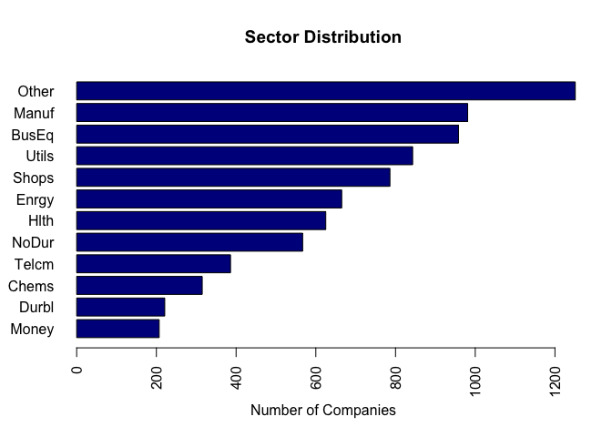

Exploratory Data Analysis
Contents
Exploratory Data Analysis#
Exploratory Data Analysis enables us to understand the dataset clearly. It also helps in cleaning the data which will further help us to maximize the output from the machine learning models.
library(caret)
## Loading required package: ggplot2
## Loading required package: lattice
library(DataExplorer)
library(dplyr)
##
## Attaching package: 'dplyr'
## The following objects are masked from 'package:stats':
##
## filter, lag
## The following objects are masked from 'package:base':
##
## intersect, setdiff, setequal, union
library(inspectdf)
df <- read.csv("./../data/regression_data/input/player_data.csv")
head(df)
## X Name Apps Mins Mins.Gm Height Weight Age Av.Rat Gls Gls.90
## 1 0 Josip Mijatović 12 809 67.41667 173 68 20 7.14 1 0.11
## 2 1 Duje Ninčević 15 1161 77.40000 172 69 25 6.84 0 0.00
## 3 2 Marin Karabatić 15 1350 90.00000 170 62 22 6.90 0 0.00
## 4 3 Vicko Ševelj 20 1738 86.90000 192 86 22 7.15 1 0.05
## 5 4 Fran Vujnović 15 1384 92.26667 190 77 19 7.23 4 0.26
## 6 5 Šimun Mikolčić 15 1380 92.00000 180 70 18 7.32 1 0.07
## Shot.. Pen.R xG Ch.C.90 Asts.90 K.Ps.90 Pas.. Cr.C.A Drb.90 Distance Hdr..
## 1 0.67 0 0.18 0.00 0.22 1.78 0.92 0.30 0.11 102.6 0.73
## 2 0.38 0 0.56 0.08 0.39 1.09 0.90 0.75 0.16 150.3 0.71
## 3 0.10 0 3.31 0.14 0.00 0.73 0.89 0.28 0.33 172.8 0.79
## 4 0.30 0 0.42 0.00 0.26 0.31 0.87 0.15 0.05 101.9 0.80
## 5 0.33 0 0.00 0.00 0.13 0.00 0.80 0.00 0.00 22.2 0.63
## 6 0.33 0 0.04 0.00 0.20 0.07 0.78 0.00 0.07 18.8 0.50
## K.Tck Fls Int.90 Clear Con.90 xSv.. Sv.. Svh Svt Svp Pens.Saved.Ratio PoM
## 1 0 13 1.45 24 0 0 0 0 0 0 0 1
## 2 0 19 1.47 46 0 0 0 0 0 0 0 0
## 3 7 21 2.93 78 0 0 0 0 0 0 0 1
## 4 2 17 1.40 74 0 0 0 0 0 0 0 1
## 5 0 14 0.39 16 0 0 0 0 0 0 0 0
## 6 0 20 0.20 0 0 0 0 0 0 0 0 0
## Aer.A.90 Off Based Tck.R CA Saves Saves.xSv.
## 1 4.45 0 Croatia (3. HNL Zapad) 0.88 84 0 0
## 2 4.26 0 Croatia (3. HNL Jug) 0.76 79 0 0
## 3 6.73 0 Croatia (3. HNL Jug) 0.77 87 0 0
## 4 5.75 1 Bosnia & Herzegovina (Liga 12) 0.88 95 0 0
## 5 1.56 0 Croatia (3. HNL Istok) 0.93 83 0 0
## 6 0.26 0 Croatia (3. HNL Istok) 0.75 81 0 0
## Gls.xG Dist.Mins Transfer.Value Value
## 1 5.555556 0.12682324 €3K - €9K 6000
## 2 0.000000 0.12945736 €0 - €2.5K 1250
## 3 0.000000 0.12800000 €0 - €12K 6000
## 4 2.380952 0.05863061 €100K - €1M 550000
## 5 0.000000 0.01604046 €14K - €150K 82000
## 6 25.000000 0.01362319 €35K - €350K 192500
Features Analysis#
colnames(df)
## [1] "X" "Name" "Apps" "Mins"
## [5] "Mins.Gm" "Height" "Weight" "Age"
## [9] "Av.Rat" "Gls" "Gls.90" "Shot.."
## [13] "Pen.R" "xG" "Ch.C.90" "Asts.90"
## [17] "K.Ps.90" "Pas.." "Cr.C.A" "Drb.90"
## [21] "Distance" "Hdr.." "K.Tck" "Fls"
## [25] "Int.90" "Clear" "Con.90" "xSv.."
## [29] "Sv.." "Svh" "Svt" "Svp"
## [33] "Pens.Saved.Ratio" "PoM" "Aer.A.90" "Off"
## [37] "Based" "Tck.R" "CA" "Saves"
## [41] "Saves.xSv." "Gls.xG" "Dist.Mins" "Transfer.Value"
## [45] "Value"
column_types <- inspect_types(df)
column_types
## # A tibble: 3 × 4
## type cnt pcnt col_name
## <chr> <int> <dbl> <named list>
## 1 numeric 39 86.7 <chr [39]>
## 2 character 3 6.67 <chr [3]>
## 3 integer 3 6.67 <chr [3]>
column_types %>% show_plot()

The column X is just an index number and hence it can be removed since it will provide to information to the models. Moreover, the column Transfer Value contains a range which can be splitted into 2 columns which will contain the lower value and the upper value of the transfer of the player.
Let us visualize the structure of the dataset.
plot_str(df)
introduce(df)
## rows columns discrete_columns continuous_columns all_missing_columns
## 1 1122 45 3 42 0
## total_missing_values complete_rows total_observations memory_usage
## 1 0 1122 50490 522160
plot_intro(df)

There are no missing values in the dataset. The dataset is mostly composed of numbers rather than categories and hence the amount of preprocessing that will be required to make it fit for modelling will be less.
inspect_imb(df)
## # A tibble: 3 × 4
## col_name value pcnt cnt
## <chr> <chr> <dbl> <int>
## 1 Based France (Ligue 1) 7.58 85
## 2 Transfer.Value €160K - €1.6M 1.60 18
## 3 Name Ederson 0.357 4
inspect_imb(df) %>% show_plot()
## Warning: `guides(<scale> = FALSE)` is deprecated. Please use `guides(<scale> =
## "none")` instead.

The percentage of dominant class is low in all the 3 categorical columns and hence no preprocessing related to sampling will be required for modelling the data.
Univariate Analysis#
Categorical Variables#
data.frame(table(df$Based))
## Var1 Freq
## 1 Argentina (Liga Profesional) 16
## 2 Austria (ADMIRAL 2. Liga) 9
## 3 Austria (Admiral Bundesliga) 24
## 4 Belgium (1B Pro League) 10
## 5 Belgium (Eerste nationale) 2
## 6 Belgium (Pro League) 39
## 7 Bosnia & Herzegovina (Liga 12) 7
## 8 Brazil (Brasileiro Série A) 20
## 9 Brazil (Campeonato Brasileiro Série B) 3
## 10 Chile (Primera División) 3
## 11 China (CFA Super League) 3
## 12 Colombia (Categoría Primera A) 11
## 13 Croatia (3. HNL Istok) 13
## 14 Croatia (3. HNL Jug) 24
## 15 Croatia (3. HNL Zapad) 13
## 16 Croatia (Druga HNL) 25
## 17 Croatia (Prva HNL) 36
## 18 Croatia (Regionalne Lige - Sibenik) 1
## 19 Cyprus (A' Katigorías) 11
## 20 Denmark (Superliga) 6
## 21 DR Congo (Vodacom Ligue 1) 1
## 22 Ecuador (Serie A) 1
## 23 England (EFL Championship) 7
## 24 England (EFL League One) 1
## 25 England (Premier League) 53
## 26 France (Ligue 1) 85
## 27 France (Ligue 2) 81
## 28 France (National 2 Groupe A) 3
## 29 France (National 2 Groupe B) 4
## 30 France (National 2 Groupe C) 11
## 31 France (National 2 Groupe D) 4
## 32 France (National 3 Auvergne-Rhône-Alpes) 1
## 33 France (National 3 Hauts-de-France) 1
## 34 France (National 3 Île-de-France) 2
## 35 France (National 3 Méditerranée-Corse) 2
## 36 France (National 3 Nouvelle-Aquitaine) 1
## 37 France (National 3 Pays de la Loire) 2
## 38 Germany (2. Bundesliga) 1
## 39 Germany (Bundesliga) 6
## 40 Holland (Eerste Divisie) 5
## 41 Holland (Eredivisie) 42
## 42 Hungary (OTP Bank Liga) 1
## 43 Israel (Ligat Ha'Al) 1
## 44 Italy (Lega Nazionale Dilettanti A) 4
## 45 Italy (Lega Nazionale Dilettanti C) 4
## 46 Italy (Lega Nazionale Dilettanti D) 3
## 47 Italy (Lega Nazionale Dilettanti E) 12
## 48 Italy (Lega Nazionale Dilettanti F) 5
## 49 Italy (Lega Nazionale Dilettanti H) 6
## 50 Italy (Serie A) 68
## 51 Italy (Serie B) 54
## 52 Italy (Serie C/A) 4
## 53 Italy (Serie C/B) 7
## 54 Mexico (Liga BBVA MX) 14
## 55 Moldova (Divizia Naţională) 1
## 56 Norway (Eliteserien) 3
## 57 Paraguay (Primera División) 3
## 58 Poland (Ekstraklasa) 10
## 59 Portugal (Campeonato D`Elite Série 2 Porto) 1
## 60 Portugal (Campeonato dos Açores - Ponta Delgada) 7
## 61 Portugal (Campeonato Safina - Aveiro) 3
## 62 Portugal (FPF Liga 3) 17
## 63 Portugal (Liga 3 Norte) 21
## 64 Portugal (Liga 3 Sul) 14
## 65 Portugal (Liga Portugal 2) 59
## 66 Portugal (Primeira Divisão - Castelo Branco) 1
## 67 Portugal (Primeira Liga) 66
## 68 Portugal (Pro-Nacional - Braga) 1
## 69 Romania (Liga I) 1
## 70 Russia (Premier Liga) 3
## 71 Serbia (Super liga) 2
## 72 Slovenia (1. SNL) 12
## 73 Slovenia (2. SNL) 4
## 74 Spain (LaLiga 2) 1
## 75 Spain (LaLiga) 45
## 76 Sweden (Allsvenskan) 2
## 77 Switzerland (Challenge League) 1
## 78 Switzerland (Super League) 16
## 79 Turkey (Süper Lig) 3
## 80 U.S.A. (MLS) 43
## 81 Ukraine (Favbet Liha) 5
## 82 Uruguay (Campeonato Uruguayo) 4
The number of locations is quite large and hence it will be not be possible to understand the distribution by plotting. But it can be noted that a lot of locations are represented by only 1 or 2 players and hence the information related to such observations may not be useful for modelling the data. But since the number of observations present are less in number it will not be apt to remove those observations. On the other hand, the Based column can itself be removed so that its information is not used by the model and create any bias in the models.
# Identify the locations represented by only 1 player
based.count.df <- data.frame(table(df$Based))
bc.data <- based.count.df[based.count.df$Freq==1,]
bc.data
## Var1 Freq
## 18 Croatia (Regionalne Lige - Sibenik) 1
## 21 DR Congo (Vodacom Ligue 1) 1
## 22 Ecuador (Serie A) 1
## 24 England (EFL League One) 1
## 32 France (National 3 Auvergne-Rhône-Alpes) 1
## 33 France (National 3 Hauts-de-France) 1
## 36 France (National 3 Nouvelle-Aquitaine) 1
## 38 Germany (2. Bundesliga) 1
## 42 Hungary (OTP Bank Liga) 1
## 43 Israel (Ligat Ha'Al) 1
## 55 Moldova (Divizia Naţională) 1
## 59 Portugal (Campeonato D`Elite Série 2 Porto) 1
## 66 Portugal (Primeira Divisão - Castelo Branco) 1
## 68 Portugal (Pro-Nacional - Braga) 1
## 69 Romania (Liga I) 1
## 74 Spain (LaLiga 2) 1
## 77 Switzerland (Challenge League) 1
There are 17 locations which are represented by 1 player only.
plot_histogram(df)


There are few variables which have outliers in them but more clear picture will be given in multivariate by comparing with the target variable. Also some variables have 1 value as most dominant and hence columns with low or near zero variance needs to be identified and acted upon.
colnames(df[,nearZeroVar(df)])
## [1] "Pen.R" "Con.90" "xSv.." "Sv.."
## [5] "Svh" "Svt" "Svp" "Pens.Saved.Ratio"
## [9] "Saves" "Saves.xSv."
These columns have variances which are near zero meaning they have little information that can contribute to the model learning. Hence it will be better to remove such columns.
Multivariate Analysis#
plot_boxplot(df, by='CA')


Some prominent outliers are present in the following columns:
Gaols divided by expected goals
Number of saves
Penalty score ratio
Expected goals
Shots caught
Percentage of expected saves
Average transfer value
Though outliers are present in individual features but they may not be true outliers and there is a possibility of information loss by removing them. To mitigate this issue, it will be more appropriate to consider an observation as a whole to find the true outliers.
Correlation Analysis#
Correlation analysis can only be perform on numerical columns and hence appropriate data needs to be subset.
# Select data with only numerical columns
num.data <- df %>% dplyr::select(where(is.numeric))
plot_correlation(num.data)

For the above heatmap, it can be observed that there exist some highly correlated features which are:
Penalty saved ratio, Penalty Score ratio
Saves, Clearances per game, Shots caught, shots repelled, shots blocked
Aerial attempts per game, Clearances in total, Interceptions made per game
Correlated features should be removes to build better models.